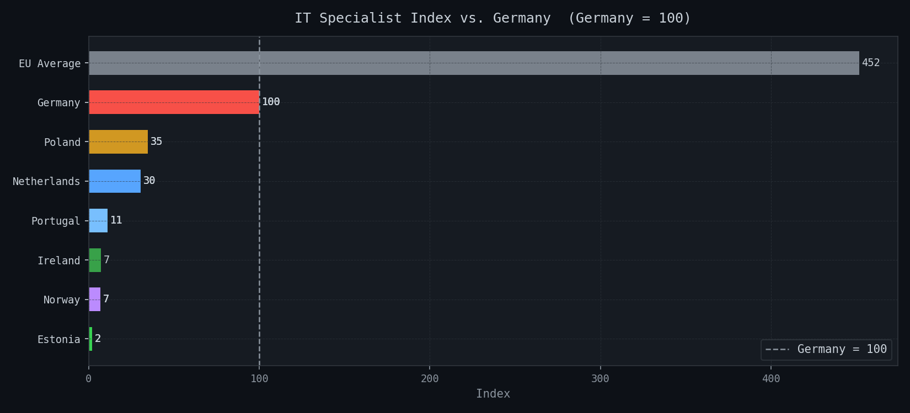
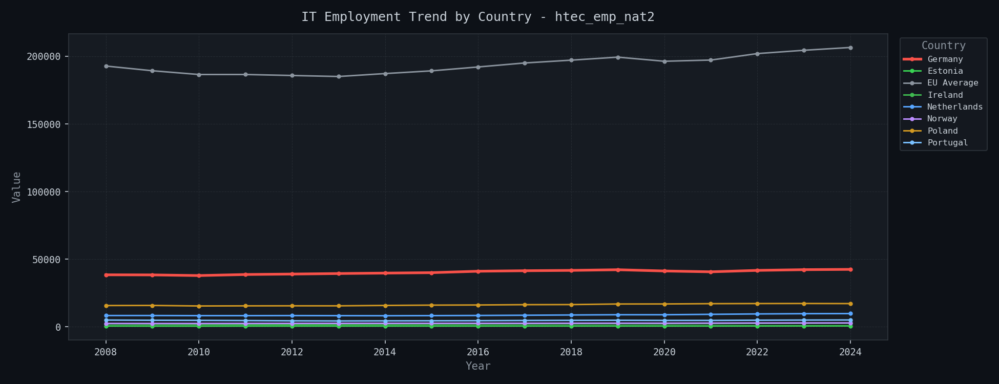
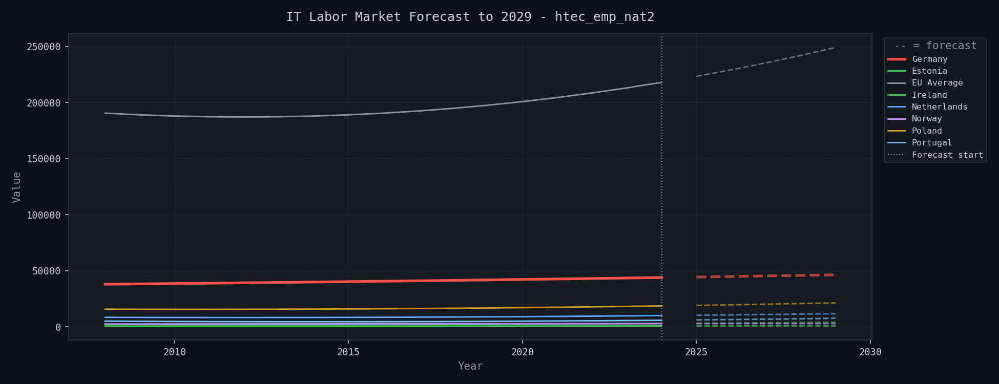

| country_code | country | isoc_sks_itsps | htec_emp_nat2 | jvs_q_nace2 |
|---|---|---|---|---|
| DE | Germany | 1832.2 | 42480.1 | 1177049.0 |
| DE | Germany | 1832.2 | 42480.1 | 1057735.0 |
| DE | Germany | 1832.2 | 42480.1 | 1033010.0 |
| DE | Germany | 1832.2 | 42480.1 | 1244089.0 |
| EE | Estonia | 36.9 | 698.6 | 9130.0 |
| EE | Estonia | 36.9 | 698.6 | 10344.0 |
| EE | Estonia | 36.9 | 698.6 | 9375.0 |
| EU27_2020 | European Union - 27 countries (from 2020) | 8273.9 | 206502.6 | NaN |
| IE | Ireland | 131.2 | 2737.2 | NaN |
| NL | Netherlands | 556.1 | 9797.6 | 396700.0 |
| NL | Netherlands | 556.1 | 9797.6 | 402700.0 |
| NL | Netherlands | 556.1 | 9797.6 | 384300.0 |
| NO | Norway | 125.7 | 2888.7 | 107350.0 |
| NO | Norway | 125.7 | 2888.7 | 94650.0 |
| NO | Norway | 125.7 | 2888.7 | 82597.0 |
| NO | Norway | 125.7 | 2888.7 | 74036.0 |
| PL | Poland | 636.6 | 17190.5 | 101026.0 |
| PL | Poland | 636.6 | 17190.5 | 95734.0 |
| PL | Poland | 636.6 | 17190.5 | 94738.0 |
| PT | Portugal | 202.5 | 5083.4 | 56948.0 |
| PT | Portugal | 202.5 | 5083.4 | 54987.0 |
| PT | Portugal | 202.5 | 5083.4 | 56952.0 |
| country_code | dataset | model | r2 | mae | success | error |
|---|---|---|---|---|---|---|
| DE | htec_emp_nat2 | polynomial_deg2 | -3.6553 | 1475.39 | True | NaN |
| DE | isoc_sks_itsps | polynomial_deg2 | -4.3843 | 189.96 | True | NaN |
| DE | jvs_q_nace2 | polynomial_deg2 | -2.7508 | 456143.58 | True | NaN |
| EE | htec_emp_nat2 | polynomial_deg2 | -0.1708 | 19.34 | True | NaN |
| EE | isoc_sks_itsps | polynomial_deg2 | -4.1351 | 4.38 | True | NaN |
| EE | jvs_q_nace2 | polynomial_deg2 | -10.8384 | 4217.82 | True | NaN |
| EU27_2020 | htec_emp_nat2 | polynomial_deg2 | -5.2853 | 8487.61 | True | NaN |
| EU27_2020 | isoc_sks_itsps | polynomial_deg2 | -0.1108 | 497.31 | True | NaN |
| IE | htec_emp_nat2 | polynomial_deg2 | -0.4530 | 133.94 | True | NaN |
| IE | isoc_sks_itsps | polynomial_deg2 | -2.7295 | 18.29 | True | NaN |
| NL | htec_emp_nat2 | polynomial_deg2 | 0.7387 | 75.79 | True | NaN |
| NL | isoc_sks_itsps | polynomial_deg2 | -0.1515 | 42.28 | True | NaN |
| NL | jvs_q_nace2 | polynomial_deg2 | -2.0997 | 97404.81 | True | NaN |
| NO | htec_emp_nat2 | polynomial_deg2 | -4.0057 | 96.30 | True | NaN |
| NO | isoc_sks_itsps | polynomial_deg2 | -7.4944 | 8.67 | True | NaN |
| NO | jvs_q_nace2 | polynomial_deg2 | -2.2247 | 26431.96 | True | NaN |
| PL | htec_emp_nat2 | polynomial_deg2 | -324.1207 | 797.54 | True | NaN |
| PL | isoc_sks_itsps | polynomial_deg2 | -2.5073 | 87.77 | True | NaN |
| PL | jvs_q_nace2 | polynomial_deg2 | -32.1913 | 62969.14 | True | NaN |
| PT | htec_emp_nat2 | polynomial_deg2 | -17.5562 | 512.28 | True | NaN |
| PT | isoc_sks_itsps | polynomial_deg2 | -0.0314 | 16.53 | True | NaN |
| PT | jvs_q_nace2 | polynomial_deg2 | -3.3538 | 5825.59 | True | NaN |